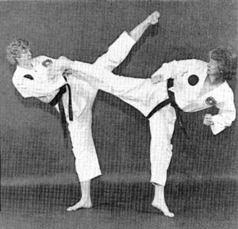

Our Beginning
By Mr. Dwayne Ferguson, Ms. Judy Clinton, and Mr. Brad Deaton
September 2001
Two Rivers Martial Arts teaches traditional Tae Kwon Do, but we are not a traditional martial arts school. We are traditional because we stress the five tenets - Courtesy, Integrity, Perseverance, Self-Control, and Indominantable Spirt - and because we practice a non-contact sparring style. We are non-traditional because we have no headmaster. Two Rivers is administered by a Board of Directors, which is almost unheard of in martial arts circles.
Two Rivers traces its roots to the Eric Heintz Black Belt Academy, and through Master
Heintz, to Grandmaster Woo Jin Jung of
Jung's Tae Kwon Do in Cedar Rapids. Master Heintz ran a traditional Tae Kwon
Do school in the typical manner. He was one of Master Jung's best students and taught
Tae Kwon Do at the YMCA in downtown Des Moines for years before opening his own school
in the Wakonda Shopping Center. This is the "traditional" way a martial arts school
is started. A student decides to go out on his or her own with the master's blessing.
In martial arts, the bond between the student and teacher is very strong, and a student
usually maintains the affiliation with his/her former master even after establishing
his or her own school.
Two Rivers Martial Arts did not develop in the traditional way. During the early
1990's, Master Heintz began to have health problems. He had an ulcer that eventually
ended with the loss of his stomach. During his first absence of several months, the
school's black belts taught classes, ran promotion tests, and carried on the day-to-day
operations of the school. Mr. Heintz returned, resumed control of the school, and
things returned to normal. Then he had a relapse, and the black belts again maintained
the school. Finally, in 1995, Mr. Heintz again left the school to his black belts
because of his illness and was able to return on only a few occasions. The black
belts ran the school from 1995 through July 28, 1998, when the Eric Heintz Black
Belt Academy officially closed.
It was a hot Saturday afternoon, July 25, when we held our last meeting as Eric
Heintz Black Belt Academy students in the lobby of Master Heintz's school. About
a dozen or so black belts showed up. We sat on the floor in the lobby, because all
the furniture had been moved out, the electricity had been turned off, and the dojang
was dark.
We were trying to decide how we could continue doing Tae Kwon Do in the way we had
been taught. Some had already decided to quit and were conspicuous by their absence.
One of Master Heintz's senior students was starting his own school in Ankeny. But
for many of us, training there was not a viable option. We all had our own reasons.
As we sat there in the dim light from the window, we were starting to realize that
the only option we had, if we were to stay together and continue training, was to
start our own school. A long discussion took place, and some students expressed an
opinion that this idea wasn't going to work. Some instructors were concerned that
their students would be left out in the cold if the idea didn't work, and they didn't
want to take the chance that we could actually open a school within a short period
of time.
At the end of the meeting, someone said they would get together the branch instructors
to see what they could come up with and let the rest of us know. We had run the school
for Master Heintz for three years, why not our own? Those branch instructors, plus
a few others as consultants, became the first Board of Directors, with Ms. Julia
Freel as the first business manager.
These students met almost weekly to form a non-profit corporation. Thanks to a generous
financial contribution from a senior black belt, we were able to hire an accountant
and an attorney, get insurance, and jump through all the bureaucratic hoops to become
a legally recognized Tae Kwon Do school (and a non-profit organization). Everyone
had an innocent optimism. We weren't sure what we were up against, but we somehow
knew we could do it. That feeling seemed to spread to our accountant and lawyer.
They worked with us, apparently without concern about when we could pay them in full.
That further supported our confidence.
And during this early time, our business manager found places for us to train so
we could continue our traditional Friday night brown and black belt class. We met
in a community center on the east side for a while. We trained in one of the smaller
Central Campus gyms (with no air-conditioning). We held our tests at several locations,
including Carlisle.
We did all this with Mr. Heintz's and Ms. Bair's blessing and a distinct lack of
support from our superiors, who continued to press for a merging of all former Eric
Heintz Black Belt Academy branches, and who continued to inform us that what we were
attempting was a bad idea and we would certainly fail.
Despite this negativity, we persevered and in a little over a year later, we were
able to move into a home of our own, called the Hub. Our students and the parents
of students took a gutted-out warehouse-type room and built walls, ceilings, created
locker rooms, an office and storage area. We painted, laid carpet, had electrical
work done, stained and hung doors, hung pictures, and did whatever needed to be done.
Students did almost all of the work themselves. After working their own day jobs,
they spent many an evening and weekend devoting their time, energy, and love to this
project.
The reason that it's call the Hub, and not the Main School, like when we were with
the Eric Heintz Black Belt Academy, is because this location is just a centralized
place for all branches to meet. It is no more important, or "main", than any other
of our branch schools. Visualize, if you will, an old wagon wheel, and think of how
all the spokes feed into a central hub. That's Two Rivers Martial Arts - one hub,
many spokes.
It's been more than three years since we sat in that dimly light lobby and said,
"Why not" - when everyone else said it won't work. Today Two Rivers Martial Arts
is alive and well. We have added four brand new branches - Easter Lake and Weeks
Middle School in Des Moines, Monroe Elementary in Monroe, and in Trenton, Missouri.
We lost two of our original branches, Norwalk and Meredith, and we were joined briefly
by the Methodist branch, which has since left to form it's own school. We now total
twelve locations.
We've grown financially, from scrimping by the first year to stability. We have
enough income to pay the bills; we have a permanent location; and we've start setting
aside funds for scholarships - both for people who can't afford to train in Tae Kwon
Do and for our students heading off to college. We've done all this while charging
fees that are approximately two-thirds what you'd pay at a typical for-profit martial
arts school in Des Moines and other Iowa cities.
Two Rivers Martial Arts is a school run by its students. We are all volunteers.
No one is paid to teach or serve on the Board of Directors. We do this so we can
continue to practice Tae Kwon Do and to pass on what we've gained to the next generations
of martial artists.
Master Heintz and Master Bair
Master Eric Heintz (6th dan) and Master Kaye Bair (6th dan) are the master instructors
who trained the primary instructors of Two Rivers Martial Arts. Masters Heintz and
Bair began training in Tae Kwon Do in 1977 in Cedar Rapids, Iowa with Grandmaster
Woo Jin Jung (8th Dan).
At the time Master Heintz was an attorney. He trained with Grandmaster Jung for
many years and eventually began teaching as well. When his work took him to Ames,
Iowa, Master Heintz began teaching Tae Kwon Do at the YWCA in nearby Des Moines.
He continued to teach there part-time while working full-time as an attorney for
several years. But as his love of Tae Kwon Do grew, his interest in working as an
attorney full-time waned.
In 1984 Master Heintz made the big leap and opened the main branch of the Eric Heintz
Black Belt Academy in Des Moines, Iowa. Now that Master Heintz is retired, his black
belt students carry on his tradition through Two Rivers Martial Arts.
In addition to having owned and operated his own school, Master Heintz has also
been a philanthropist. He and the Eric Heintz Black Belt Academy had a strong tie
to a local charity called Amanda the Panda. Now that Master Heintz is retired, Two
Rivers Martial Arts maintains that strong bond of support. Amanda the Panda is an
organization dedicated to helping children and families through the grieving process
when a loved one has died. Students and instructors at our academy support Amanda
the Panda as volunteers, camp counselors, and with donations of material and money.
In addition Master Heintz has organized board breaking marathons to raise funds for
the charity on six occasions.
 At his first board breaking marathon in 1985, Master Heintz broke 1000 boards in
six hours. More importantly, he raised approximately $1800 for Amanda the Panda in
the process. Since then he has repeated the feat with 2000, 3000, and 4000 boards.
Finally on Saturday August 27, 1994 Master Heintz broke 5000 boards in about eight
hours. In 1995 his students took over the board breaking duties for a marathon which
featured board breaking by more than 100 different students. In total Master Heintz
and his students have raised over $60,000 for Amanda the Panda. The impact of his
board breaks has been felt by hundreds of children and their parents who have received
help from Amanda the Panda.
Master Kaye Bair (6th Dan) was the highest ranking student and instructor at the
Eric Heintz Black Belt Academy and is one of the highest ranking women black belts
in the Midwest of the United States. Master Heintz and Master Bair began training
together under Grandmaster Jung in 1977.
Master Bair was the primary instructor at the Southeast Polk branch of the Eric
Heintz Black Belt Academy for many years. She was also the primary instructor for
the Friday night brown and black belt classes from 1995-1997.
Master Heintz and Master Bair

Master Bair has been the spiritual leader and senior judge at our academy's Tae
Kwon Do tests for the past several years. She continues to be an advisor to the Board
of Directors of Two Rivers Martial Arts and performs as a judge at our tests when
her schedule permits. Master Bair is currently taking a leave of absence from teaching
Tae Kwon Do, but she may choose return at some point in the future.